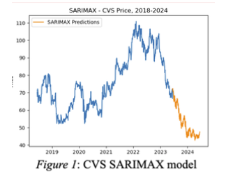
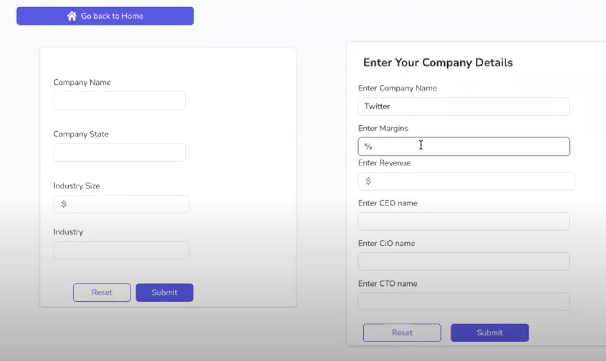
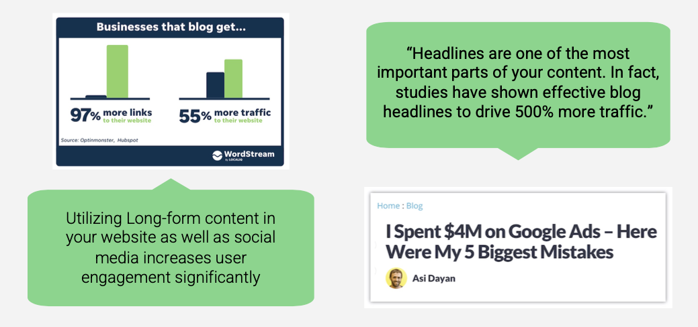
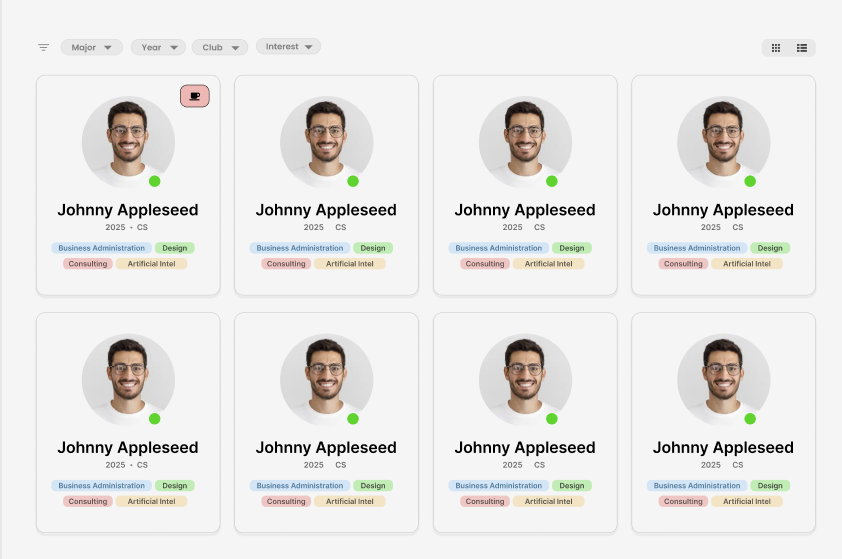

Projects
Things I'm currently tinkering with, and a few I've shipped.

Time-series Forecasting — Stock Prediction
May 2023 – June 2023
Data analysis of the performance of stocks in the healthcare, technology, and consumer retail industries from 2018-2023, as well as predicted performance for 2024. Various data analysis techniques, including ARIMA and SARIMAX time series forecasting models, were employed to assess, visualize, and forecast stock performance trends.

PrivateEye — Private Capital Deal Sourcing
January 2023 – April 2023
Developed an application using SQL and Flask that acts as a deal sourcing platform aiming to automate the process of private companies looking for investments and financial buyers looking to invest. Utilized REST API for routing the different personas, used Docker container, and app-smith as reactive frontend connected to database.

Real Estate Marketing Strategy
February 2022 – June 2022
Leveraged advanced consulting skills to provide pro-bono services for a Cambridge real estate startup. Led a student team in delivering a strategic marketing growth plan to the CEO. Orchestrated feature roadmap development, influencing cross-functional teams for seamless project execution and stakeholder alignment.

Networking Platform For Students
July 2023 – Current
Solve the problem of inadequate, fragmented, and generic networking resources for Northeastern University students by creating a specialized, user-friendly platform that connects them with relevant peers who can provide insights and support for their academic and professional journeys — by coffee chats or just through the interface. No extra fluff. Just experience and networking.
Charlestown 1775 Census Overview
May 2024 – July 2024
Examining data on family structures, individual residents, and enslaved people to uncover significant historical sites that tell unique stories. This analysis is intended to support further in-depth study of the demographic makeup of Charlestown in 1775 and assist archaeological teams in identifying potential excavation sites.